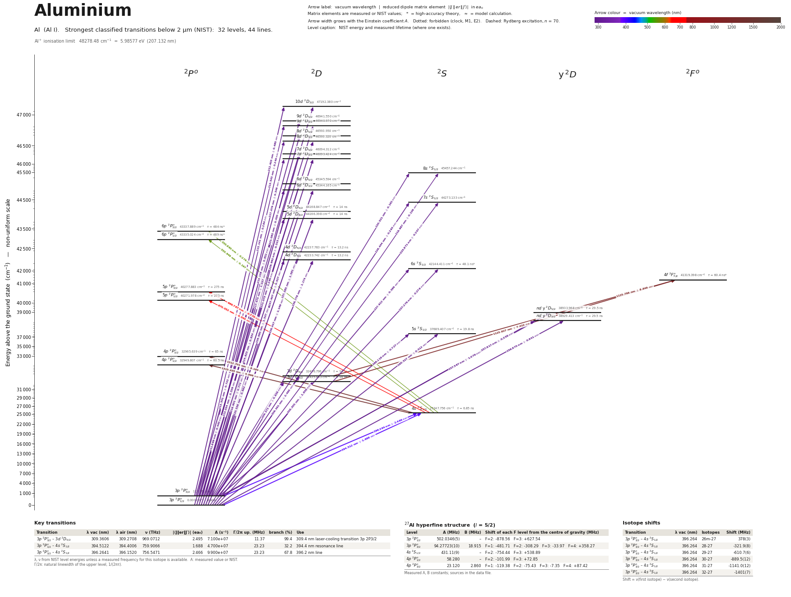

Aluminium energy level diagram
Energy levels and transitions of neutral aluminium (Al I): the 44 strongest classified lines below 2 µm from the NIST Atomic Spectra Database and the 32 levels they connect, each line with its vacuum wavelength, frequency and, for 44 of them, the reduced dipole matrix element derived from the NIST transition rate. Measured lifetimes, transition rates, hyperfine constants and isotope shifts from the literature are included, each with its citation.
Hover a line or a level to isolate it, click to keep it selected. Scroll to zoom, drag to move.

Download: diagram (PDF) diagram (SVG) transitions (CSV) levels (CSV) source code

Key transitions of aluminium
| Transition | λ vac (nm) | λ air (nm) | ν (THz) | |⟨J‖er‖J′⟩| (ea₀) | A (s⁻¹) | Γ/2π up. (MHz) | branch (%) | Use |
|---|---|---|---|---|---|---|---|---|
| 3p 2P°3/2 – 3d 2D5/2 | 309.3606 | 309.2708 | 969.0712 | 2.495 | 7.100e+07 | 11.37 | 99.4 | 309.4 nm laser-cooling transition 3p 2P3/2 |
| 3p 2P°1/2 – 4s 2S1/2 | 394.5122 | 394.4006 | 759.9066 | 1.688 | 4.700e+07 | 23.23 | 32.2 | 394.4 nm resonance line |
| 3p 2P°3/2 – 4s 2S1/2 | 396.2641 | 396.1520 | 756.5471 | 2.466 | 9.900e+07 | 23.23 | 67.8 | 396.2 nm line |
λ, ν from NIST level energies unless a measured frequency for this isotope is available. A: measured value or NIST. Γ/2π: natural linewidth of the upper level, 1/(2πτ).
27Al hyperfine structure (I = 5/2)
| Level | A (MHz) | B (MHz) | Shift of each F level from the centre of gravity (MHz) |
|---|---|---|---|
| 3p 2P°1/2 | 502.0346(5) | – | F=2: -878.56 F=3: +627.54 |
| 3p 2P°3/2 | 94.27723(10) | 18.915 | F=1: -481.71 F=2: -308.29 F=3: -33.97 F=4: +358.27 |
| 4s 2S1/2 | 431.11(9) | – | F=2: -754.44 F=3: +538.89 |
| 4p 2P°1/2 | 58.280 | – | F=2: -101.99 F=3: +72.85 |
| 4p 2P°3/2 | 23.120 | 2.860 | F=1: -119.38 F=2: -75.43 F=3: -7.35 F=4: +87.42 |
Measured A, B constants; sources in the data file.
Isotope shifts
| Transition | λ vac (nm) | Isotopes | Shift (MHz) |
|---|---|---|---|
| 3p 2P°3/2 – 4s 2S1/2 | 396.264 | 26m-27 | 378(3) |
| 3p 2P°3/2 – 4s 2S1/2 | 396.264 | 28-27 | -321.9(8) |
| 3p 2P°3/2 – 4s 2S1/2 | 396.264 | 29-27 | -610.7(6) |
| 3p 2P°3/2 – 4s 2S1/2 | 396.264 | 30-27 | -889.5(12) |
| 3p 2P°3/2 – 4s 2S1/2 | 396.264 | 31-27 | -1141.0(12) |
| 3p 2P°3/2 – 4s 2S1/2 | 396.264 | 32-27 | -1401(7) |
Shift = ν(first isotope) − ν(second isotope).
Listed Al transitions below 2 µm
| Lower level | Upper level | λ vacuum (nm) | λ air (nm) | ν (THz) | Type | |⟨J‖er‖J′⟩| (ea₀) | A (s⁻¹) | Branching (%) | Source of matrix element / A |
|---|---|---|---|---|---|---|---|---|---|
| 3p 2P°1/2 | 10d 2D3/2 | 211.8986 | 211.8316 | 1414.7920 | E1 | 0.440 NIST | 1.030e+07 NIST | – | NIST ASD (accuracy C) |
| 3p 2P°3/2 | 10d 2D3/2 | 212.4030 | 212.3359 | 1411.4325 | E1 | 0.480 NIST | 1.220e+07 NIST | – | NIST ASD (accuracy C) |
| 3p 2P°1/2 | 9d 2D3/2 | 213.0335 | 212.9663 | 1407.2549 | E1 | 0.539 NIST | 1.520e+07 NIST | – | NIST ASD (accuracy C) |
| 3p 2P°3/2 | 9d 2D5/2 | 213.5407 | 213.4733 | 1403.9128 | E1 | 0.722 NIST | 1.810e+07 NIST | – | NIST ASD (accuracy C) |
| 3p 2P°3/2 | 9d 2D3/2 | 213.5433 | 213.4760 | 1403.8954 | E1 | 0.240 NIST | 3.000e+06 NIST | – | NIST ASD (accuracy D) |
| 3p 2P°1/2 | 8d 2D3/2 | 214.6230 | 214.5555 | 1396.8326 | E1 | 0.634 NIST | 2.060e+07 NIST | – | NIST ASD (accuracy C) |
| 3p 2P°3/2 | 8d 2D5/2 | 215.1376 | 215.0699 | 1393.4920 | E1 | 0.852 NIST | 2.460e+07 NIST | – | NIST ASD (accuracy C) |
| 3p 2P°3/2 | 8d 2D3/2 | 215.1405 | 215.0728 | 1393.4731 | E1 | 0.284 NIST | 4.090e+06 NIST | – | NIST ASD (accuracy E) |
| 3p 2P°1/2 | 7d 2D3/2 | 216.9507 | 216.8827 | 1381.8461 | E1 | 0.772 NIST | 2.960e+07 NIST | – | NIST ASD (accuracy C) |
| 3p 2P°3/2 | 7d 2D5/2 | 217.4752 | 217.4071 | 1378.5132 | E1 | 1.037 NIST | 3.530e+07 NIST | – | NIST ASD (accuracy C) |
| 3p 2P°3/2 | 7d 2D3/2 | 217.4794 | 217.4113 | 1378.4866 | E1 | 0.346 NIST | 5.880e+06 NIST | – | NIST ASD (accuracy E) |
| 3p 2P°1/2 | 8s 2S1/2 | 219.9869 | 219.9183 | 1362.7739 | E1 | 0.136 NIST | 1.750e+06 NIST | – | NIST ASD (accuracy C) |
| 3p 2P°3/2 | 8s 2S1/2 | 220.5306 | 220.4618 | 1359.4144 | E1 | 0.192 NIST | 3.490e+06 NIST | – | NIST ASD (accuracy C) |
| 3p 2P°1/2 | 6d 2D3/2 | 220.5355 | 220.4668 | 1359.3839 | E1 | 0.962 NIST | 4.370e+07 NIST | – | NIST ASD (accuracy C+) |
| 3p 2P°3/2 | 6d 2D5/2 | 221.0749 | 221.0060 | 1356.0672 | E1 | 1.290 NIST | 5.200e+07 NIST | – | NIST ASD (accuracy C+) |
| 3p 2P°3/2 | 6d 2D3/2 | 221.0819 | 221.0130 | 1356.0244 | E1 | 0.430 NIST | 8.670e+06 NIST | – | NIST ASD (accuracy C+) |
| 3p 2P°1/2 | 7s 2S1/2 | 225.8706 | 225.8007 | 1327.2751 | E1 | 0.207 NIST | 3.770e+06 NIST | – | NIST ASD (accuracy C) |
| 3p 2P°1/2 | 5d 2D3/2 | 226.4165 | 226.3464 | 1324.0753 | E1 | 1.149 measured | 5.760e+07 measured | 80.6 | Papoulia, Ekman, Jonsson, Astron. Astrophys. 621, A16 (2019) (arXiv:1808.09478), Table 5,… |
| 3p 2P°3/2 | 7s 2S1/2 | 226.4438 | 226.3737 | 1323.9156 | E1 | 0.293 NIST | 7.500e+06 NIST | – | NIST ASD (accuracy C) |
| 3p 2P°3/2 | 5d 2D5/2 | 226.9798 | 226.9096 | 1320.7892 | E1 | 1.547 measured | 6.910e+07 measured | 96.7 | Papoulia, Ekman, Jonsson, Astron. Astrophys. 621, A16 (2019) (arXiv:1808.09478), Table 5,… |
| 3p 2P°3/2 | 5d 2D3/2 | 226.9924 | 226.9222 | 1320.7158 | E1 | 0.515 measured | 1.150e+07 measured | 16.1 | Papoulia, Ekman, Jonsson, Astron. Astrophys. 621, A16 (2019) (arXiv:1808.09478), Table 5,… |
| 3p 2P°1/2 | 4d 2D3/2 | 236.7775 | 236.7052 | 1266.1357 | E1 | 1.174 measured | 5.260e+07 measured | 69.4 | Papoulia, Ekman, Jonsson, Astron. Astrophys. 621, A16 (2019) (arXiv:1808.09478), Table 5,… |
| 3p 2P°1/2 | 6s 2S1/2 | 237.2794 | 237.2070 | 1263.4577 | E1 | 0.276 NIST | 5.760e+06 NIST | 27.7 | NIST ASD (accuracy C) |
| 3p 2P°3/2 | 4d 2D5/2 | 237.3847 | 237.3122 | 1262.8974 | E1 | 1.581 measured | 6.310e+07 measured | 83.3 | Papoulia, Ekman, Jonsson, Astron. Astrophys. 621, A16 (2019) (arXiv:1808.09478), Table 5,… |
| 3p 2P°3/2 | 4d 2D3/2 | 237.4074 | 237.3350 | 1262.7762 | E1 | 0.527 measured | 1.050e+07 measured | 13.9 | Papoulia, Ekman, Jonsson, Astron. Astrophys. 621, A16 (2019) (arXiv:1808.09478), Table 5,… |
| 3p 2P°3/2 | 6s 2S1/2 | 237.9120 | 237.8394 | 1260.0982 | E1 | 0.389 NIST | 1.140e+07 NIST | 54.9 | NIST ASD (accuracy C+) |
| 3p 2P°1/2 | nd y 2D3/2 | 256.8752 | 256.7982 | 1167.0744 | E1 | 0.801 measured | 1.920e+07 measured | 56.6 | Papoulia, Ekman, Jonsson, Astron. Astrophys. 621, A16 (2019) (arXiv:1808.09478), Table 5,… |
| 3p 2P°3/2 | nd y 2D5/2 | 257.5865 | 257.5094 | 1163.8515 | E1 | 1.079 measured | 2.300e+07 measured | 67.8 | Papoulia, Ekman, Jonsson, Astron. Astrophys. 621, A16 (2019) (arXiv:1808.09478), Table 5,… |
| 3p 2P°3/2 | nd y 2D3/2 | 257.6167 | 257.5396 | 1163.7149 | E1 | 0.358 measured | 3.800e+06 measured | 11.2 | Papoulia, Ekman, Jonsson, Astron. Astrophys. 621, A16 (2019) (arXiv:1808.09478), Table 5,… |
| 3p 2P°1/2 | 5s 2S1/2 | 265.3265 | 265.2476 | 1129.9000 | E1 | 0.512 measured | 1.420e+07 measured | 28.1 | Papoulia, Ekman, Jonsson, Astron. Astrophys. 621, A16 (2019) (arXiv:1808.09478), Table 5,… |
| 3p 2P°3/2 | 5s 2S1/2 | 266.1178 | 266.0386 | 1126.5405 | E1 | 0.727 measured | 2.840e+07 measured | 56.2 | Papoulia, Ekman, Jonsson, Astron. Astrophys. 621, A16 (2019) (arXiv:1808.09478), Table 5,… |
| 3p 2P°1/2 | 3d 2D3/2 | 308.3046 | 308.2151 | 972.3904 | E1 | 1.848 measured | 5.900e+07 measured | 82.6 | Papoulia, Ekman, Jonsson, Astron. Astrophys. 621, A16 (2019) (arXiv:1808.09478), Table 5,… |
| 3p 2P°3/2 | 3d 2D5/2 | 309.3606 | 309.2708 | 969.0712 | E1 | 2.495 measured | 7.100e+07 measured | 99.4 | Papoulia, Ekman, Jonsson, Astron. Astrophys. 621, A16 (2019) (arXiv:1808.09478), Table 5,… |
| 3p 2P°3/2 | 3d 2D3/2 | 309.3735 | 309.2837 | 969.0309 | E1 | 0.838 measured | 1.200e+07 measured | 16.8 | Papoulia, Ekman, Jonsson, Astron. Astrophys. 621, A16 (2019) (arXiv:1808.09478), Table 5,… |
| 3p 2P°1/2 | 4s 2S1/2 | 394.5122 | 394.4006 | 759.9066 | E1 | 1.688 measured | 4.700e+07 measured | 32.2 | Papoulia, Ekman, Jonsson, Astron. Astrophys. 621, A16 (2019) (arXiv:1808.09478), Table 5,… |
| 3p 2P°3/2 | 4s 2S1/2 | 396.2641 | 396.1520 | 756.5471 | E1 | 2.466 measured | 9.900e+07 measured | 67.8 | Papoulia, Ekman, Jonsson, Astron. Astrophys. 621, A16 (2019) (arXiv:1808.09478), Table 5,… |
| 4s 2S1/2 | 6p 2P°3/2 | 555.8603 | 555.7059 | 539.3306 | E1 | 0.279 NIST | 2.300e+05 NIST | 11.1 | NIST ASD (accuracy C) |
| 4s 2S1/2 | 6p 2P°1/2 | 555.9488 | 555.7944 | 539.2447 | E1 | 0.197 NIST | 2.290e+05 NIST | 11.2 | NIST ASD (accuracy C) |
| 4s 2S1/2 | 5p 2P°3/2 | 669.7867 | 669.6018 | 447.5940 | E1 | 0.770 NIST | 1.000e+06 NIST | 27.5 | NIST ASD (accuracy C+) |
| 4s 2S1/2 | 5p 2P°1/2 | 670.0517 | 669.8667 | 447.4169 | E1 | 0.545 NIST | 1.000e+06 NIST | 27.5 | NIST ASD (accuracy C+) |
| 3d 2D3/2 | 4f 2F°5/2 | 1125.6271 | 1125.3189 | 266.3337 | E1 | 7.410 NIST | 1.300e+07 NIST | 78.5 | NIST ASD (accuracy A) |
| 3d 2D5/2 | 4f 2F°7/2 | 1125.7962 | 1125.4880 | 266.2937 | E1 | 8.849 NIST | 1.390e+07 NIST | 84 | NIST ASD (accuracy A) |
| 4s 2S1/2 | 4p 2P°3/2 | 1312.7007 | 1312.3417 | 228.3784 | E1 | 8.184 measured | 1.500e+07 measured | 97.5 | Papoulia, Ekman, Jonsson, Astron. Astrophys. 621, A16 (2019) (arXiv:1808.09478), Table 5,… |
| 4s 2S1/2 | 4p 2P°1/2 | 1315.4345 | 1315.0748 | 227.9038 | E1 | 5.996 measured | 1.600e+07 measured | 96.8 | Papoulia, Ekman, Jonsson, Astron. Astrophys. 621, A16 (2019) (arXiv:1808.09478), Table 5,… |
Reduced dipole matrix elements follow the convention A = ω³|d|²/(3πε₀ħc³(2J′+1)), with J′ the upper level. Tags show where a number comes from: measured, NIST compilation, high-accuracy theory, or a model calculation.
Al energy levels
Al⁺ ionisation limit 48278.48 cm⁻¹ = 5.98577 eV (207.132 nm)
Sources
- Heylen et al., Phys. Rev. C 103, 014318 (2021) (arXiv:2010.06918), Sec. III ("A(S1/2) = 4…
- NIST ASD
- NIST ASD level energies
- Papoulia, Ekman, Jonsson, Astron. Astrophys. 621, A16 (2019) (arXiv:1808.09478), Table 5,…
- Papoulia, Ekman, Jonsson, Astron. Astrophys. 621, A16 (2019) (arXiv:1808.09478), Table 5,…
- Papoulia, Ekman, Jonsson, Astron. Astrophys. 621, A16 (2019) (arXiv:1808.09478), Table 5,…
- Papoulia, Ekman, Jonsson, Astron. Astrophys. 621, A16 (2019) (arXiv:1808.09478), Table 5,…
- Papoulia, Ekman, Jonsson, Astron. Astrophys. 621, A16 (2019) (arXiv:1808.09478), Table 5,…
- Papoulia, Ekman, Jonsson, Astron. Astrophys. 621, A16 (2019) (arXiv:1808.09478), Table 5,…
- Papoulia, Ekman, Jonsson, Astron. Astrophys. 621, A16 (2019) (arXiv:1808.09478), Table 5,…
- Papoulia, Ekman, Jonsson, Astron. Astrophys. 621, A16 (2019) (arXiv:1808.09478), Table 6,…
- Papoulia, Ekman, Jonsson, Astron. Astrophys. 621, A16 (2019) (arXiv:1808.09478), Table 6,…
- Papoulia, Ekman, Jonsson, Astron. Astrophys. 621, A16 (2019) (arXiv:1808.09478), Table 6,…
- Papoulia, Ekman, Jonsson, Astron. Astrophys. 621, A16 (2019) (arXiv:1808.09478), Table 6,…
- Sur, Chaudhuri, Das, Mukherjee, arXiv:physics/0504087v2 (2005), "Case studies of atomic p…
- Sur, Chaudhuri, Das, Mukherjee, arXiv:physics/0504087v2 (2005), "Case studies of atomic p…
- Sur, Chaudhuri, Das, Mukherjee, arXiv:physics/0504087v2 (2005), "Case studies of atomic p…
- Sur, Chaudhuri, Das, Mukherjee, arXiv:physics/0504087v2 (2005), "Case studies of atomic p…
27Al (I = 5/2) is the only stable isotope; the isotope shifts listed on the 396 nm line are for radioactive 26m,28-32Al measured at ISOLDE/IGISOL, with delta-nu(27,A) = nu(A) - nu(27). Measured lifetimes and transition rates are quoted from the comparison tables of Papoulia, Ekman, Jonsson (2019), which name the original experiments; their accuracy grades (A <= 3%, B <= 10%, C+ <= 15%, C <= 25%, D <= 50%) are copied into the source string instead of a numeric unc. When a line has two observed values, the more recent laser measurement (Davidson 1990 / Vujnovic 2002) is the main entry. Lifetime alternatives marked theory are RCI length-form values of the same paper. rme_J_ea0 for the 3p-4s lines is sqrt(S) from a relativistic coupled-cluster calculation (same convention as the schema). Extra fields beyond SCHEMA.md: isotope_shift_factors, use_source, ionization_energy, mu_N, unc_sys.
Atoms with measured data
- Lithium-632 levels, 85 lines
- Lithium-732 levels, 85 lines
- Beryllium-915 levels, 24 lines
- Sodium-2336 levels, 106 lines
- Magnesium-2418 levels, 61 lines
- Magnesium-2518 levels, 61 lines
- Potassium-3934 levels, 84 lines
- Potassium-4034 levels, 84 lines
- Potassium-4134 levels, 84 lines
- Calcium-4035 levels, 61 lines
- Calcium-4335 levels, 61 lines
- Rubidium-8536 levels, 94 lines
- Rubidium-8736 levels, 94 lines
- Strontium-8740 levels, 70 lines
- Strontium-8840 levels, 70 lines
- Caesium-13331 levels, 79 lines
- Barium-13744 levels, 89 lines
- Barium-13844 levels, 89 lines
- Dysprosium-16339 levels, 55 lines
- Dysprosium-16439 levels, 55 lines
- Ytterbium-17118 levels, 26 lines
- Ytterbium-17418 levels, 26 lines